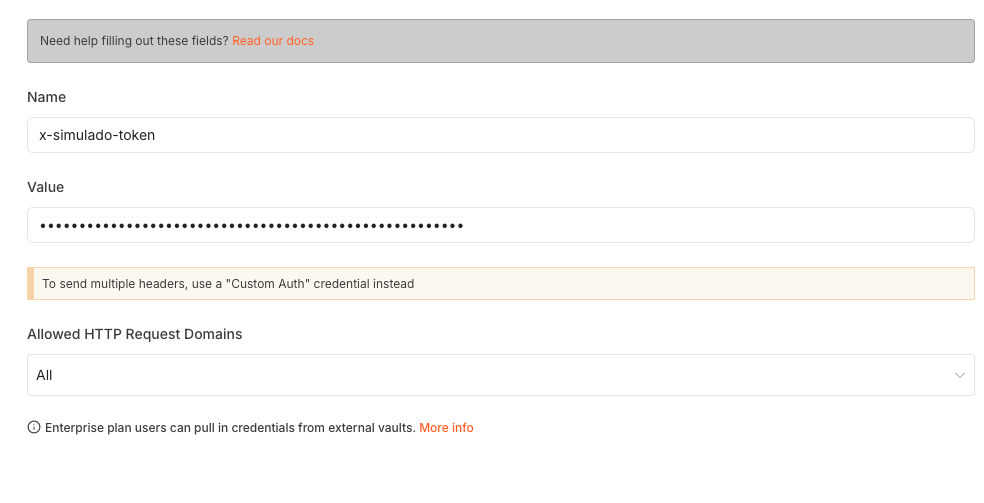
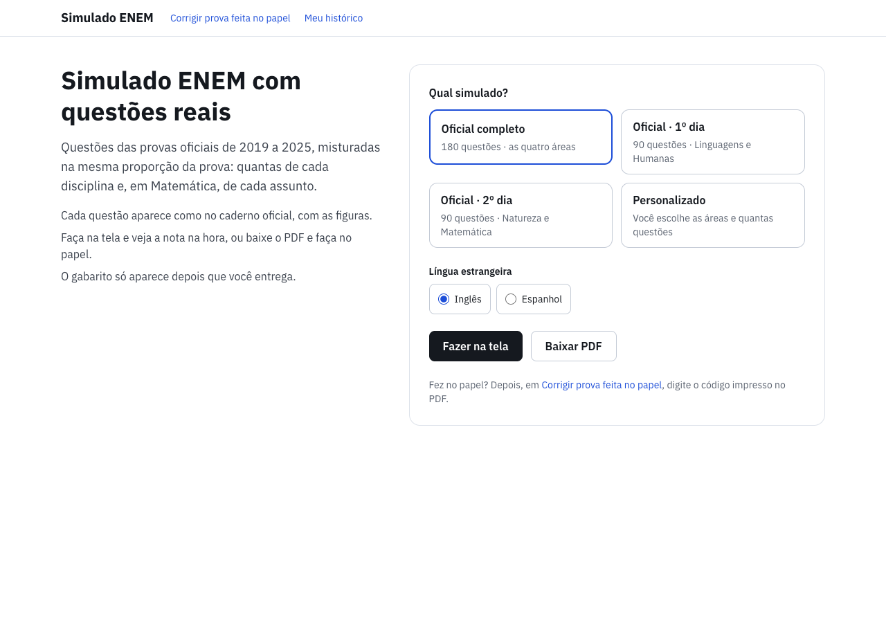
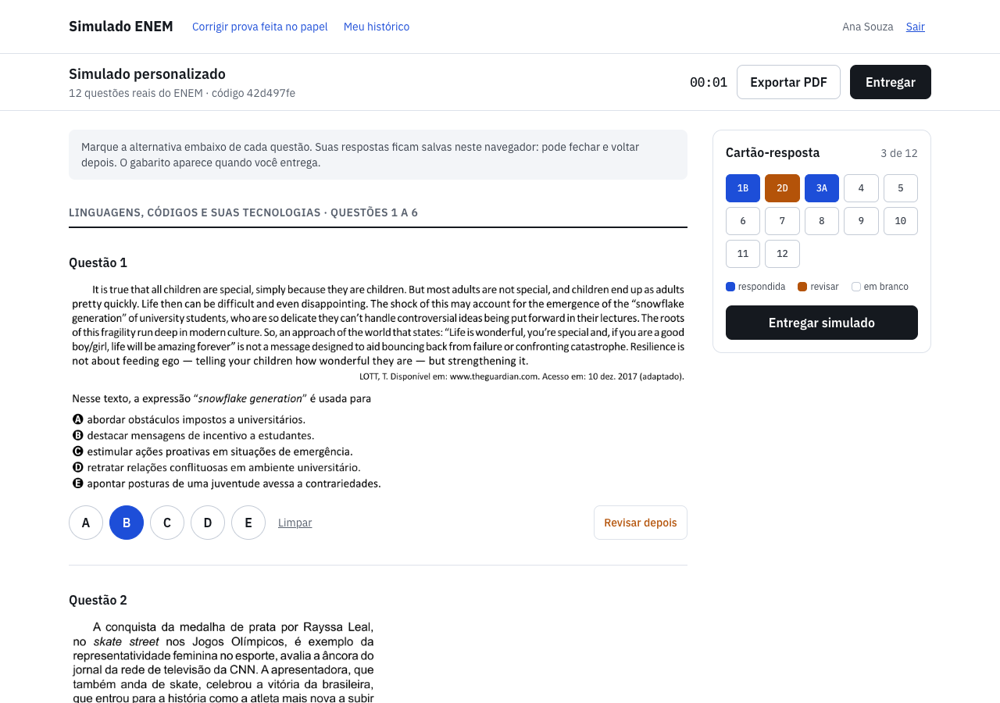
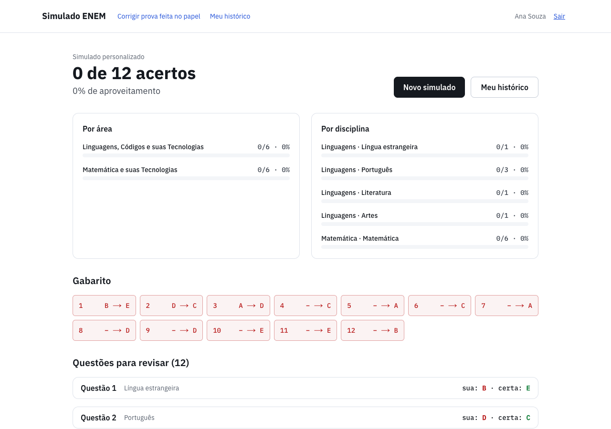
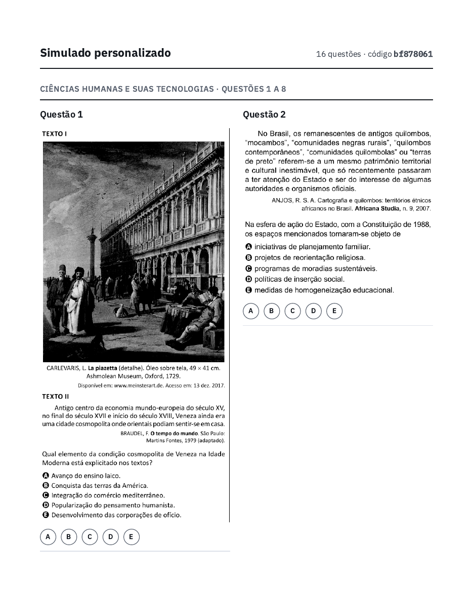
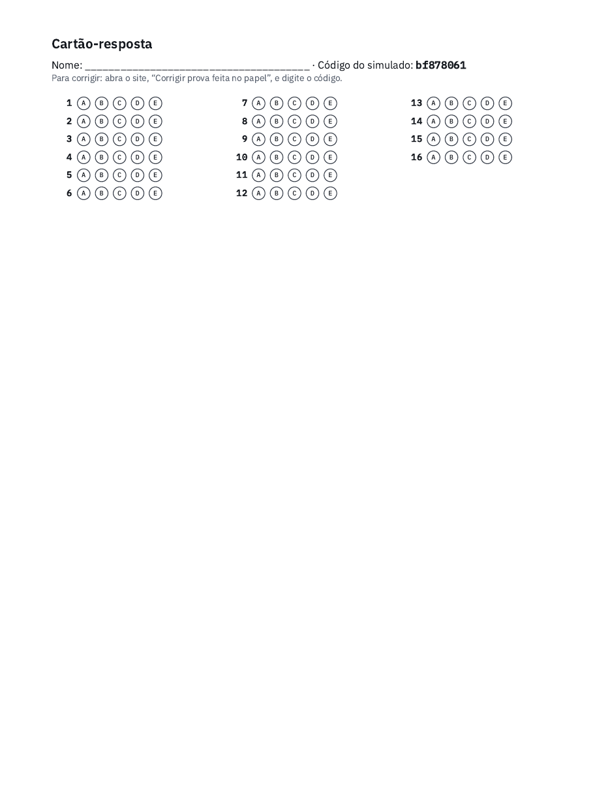
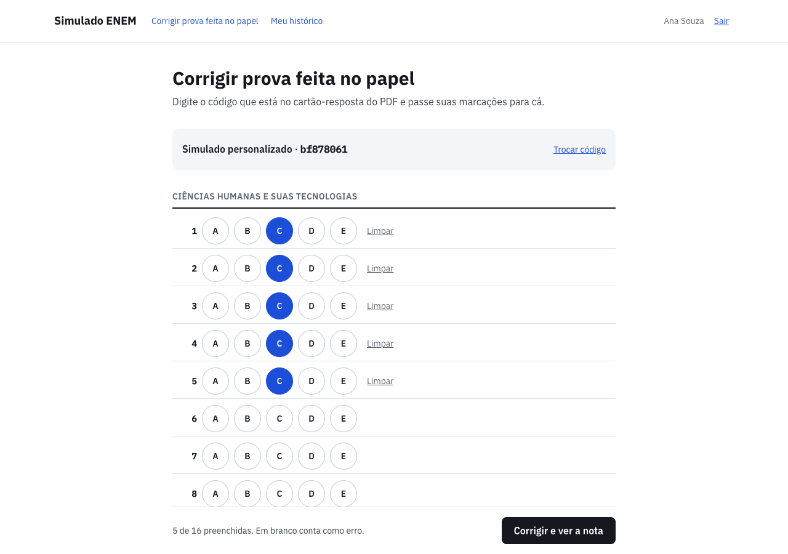

Como ligar o site, o n8n e o banco de questões nas suas contas, sem precisar saber programar.
O simulado tem três partes que conversam entre si. Você vai instalar duas delas (o n8n e a Vercel). A terceira (o banco, no Supabase) já é sua e já está pronta.
N8N_TOKEN.
be-sales14/pensi-pclb-simulador-enem-2026).simulado-enem-bernardo.env que o Thiago mandou.| Passo | O que você faz | Onde |
|---|---|---|
| 1 | Baixar o projeto e abrir o arquivo do Thiago | VS Code |
| 2 | Criar a credencial do banco (Supabase Postgres) | n8n |
| 3 | Criar a credencial da senha do site (token) | n8n |
| 4 | Importar os 5 workflows | n8n |
| 5 | Ligar as credenciais em cada workflow e publicar | n8n |
| 6 | Descobrir o endereço do seu n8n | n8n |
| 7 | Criar o projeto na Vercel e preencher as variáveis | Vercel |
| 8 | Testar o site | navegador |
Os workflows do n8n são arquivos que estão no projeto do GitHub. Vamos trazer o projeto para o seu computador.
https://github.com/be-sales14/pensi-pclb-simulador-enem-2026 e aperte Enter.Ilustração simplificada da caixa de comandos do VS Code
simulado-enem-bernardo.env que o Thiago mandou numa pasta fácil (por exemplo, Downloads).Para copiar um valor: selecione só o que vem depois do sinal = e aperte ⌘ Cmd + C.
Credencial é o “crachá” que o n8n usa para entrar num serviço. Esta deixa o n8n ler e gravar no banco de questões.
Ilustração simplificada · os nomes dos campos são os do n8n
| Campo no n8n | O que colocar |
|---|---|
| Host | valor de HOST |
| Database | valor de DATABASE |
| User | valor de USER |
| Password | valor de PASSWORD |
| Maximum Number of Connections | deixe como está |
| Ignore SSL Issues | desligado |
| SSL | Require |
| Port | 5432 |
| SSH Tunnel | desligado |
postgres.uwnuehhebwckbbhkaqyx, não só postgres. Copie do arquivo para não errar.
É a senha combinada entre o site (Vercel) e o n8n. Sem ela, qualquer pessoa poderia usar o seu n8n; com ela, só o seu site consegue.
x-simulado-tokenN8N_TOKEN (64 letras e números), volte e cole em Value.
Print real do n8n: é assim que a credencial fica. O Value aparece como bolinhas, e está certo.
x-simulado-token daqui, o valor do token que estava copiado some. Digitando o Name, você só precisa copiar uma coisa: o token.
Workflow é uma “receita” do n8n: uma sequência de caixinhas que fazem uma tarefa. Eles já estão prontos dentro do projeto, na pasta n8n.
| Arquivo | O que faz |
|---|---|
40-aluno.json | Cadastra o aluno (email e nome) e devolve o histórico de notas. |
41-simulado-montar.json | Sorteia as questões na proporção da prova oficial. |
42-simulado-entregar.json | Corrige as respostas e grava a nota. |
43-simulado-ver.json | Reabre uma prova pelo código (para quem fez no papel). |
47-manter-supabase-ativo.json | A cada 6 horas mexe no banco, para o Supabase gratuito não desligar o projeto por falta de uso. |
n8n e escolha o arquivo.Ilustração simplificada do menu ⋯ do n8n
n8n tem outros workflows (00, 02, 10, 44, 45, 46, 98, 99). O site não precisa deles: são da primeira versão do projeto e ficam como material de aula.
Agora cada caixinha que precisa de crachá recebe o seu. Faça em todos os 5 workflows.
Ilustração simplificada de um workflow no n8n
Clique duas vezes nela. Em Credential for Header Auth, escolha Simulado ENEM · token do front. Feche a caixinha.
Clique duas vezes em cada uma. Em Credential to connect with, escolha Supabase Postgres. Feche.
Clique em Save e depois em Publish. Publicar é o que faz o workflow funcionar de verdade, o dia todo.
Ilustração simplificada · não mude os outros campos
| Workflow | Webhook “Pedido” (token) | Caixinhas Postgres (banco) |
|---|---|---|
| 40-aluno | 1 | 1 |
| 41-simulado-montar | 1 | 2 |
| 42-simulado-entregar | 1 | 2 |
| 43-simulado-ver | 1 | 1 |
| 47-manter-supabase-ativo | não tem (começa com “A cada 6 horas”) | 1 |
A Vercel precisa saber onde fica a sua “cozinha”. Esse endereço aparece dentro de qualquer caixinha Webhook. Neste passo você só encontra e confere o endereço: não precisa escrever nada em arquivo.
/simulado-enem/aluno. Esse é o endereço do seu n8n.Ilustração simplificada · no lugar de “seu-n8n.exemplo.com” vai aparecer o endereço do seu n8n
| Exemplo | |
|---|---|
| O endereço do n8n | https://seu-n8n.exemplo.com/webhook/simulado-enem/aluno |
| O que vai na Vercel | https://seu-n8n.exemplo.com/webhook |
A Vercel pega o projeto direto do seu GitHub e coloca o site no ar. Toda vez que o projeto mudar no GitHub, ela atualiza o site sozinha.
Ilustração simplificada da tela “New Project” da Vercel
simulado-enem. Esse nome vira o endereço do site.front e clique em Continue. N8N_WEBHOOK_BASE. Vá à aba do n8n (passo 6), copie o Production URL, cole no Value e, ali mesmo, apague o final /simulado-enem/aluno. Clique em Add.
N8N_TOKEN. Copie o valor de N8N_TOKEN no arquivo aberto no VS Code e cole no Value. Clique em Add.Ilustração simplificada da tela “Configure Project”
| Key (escreva igualzinho) | Value (de onde copiar) |
|---|---|
| N8N_WEBHOOK_BASE | do n8n (passo 6): o Production URL sem o final /simulado-enem/aluno, terminando em /webhook |
| N8N_TOKEN | do arquivo no VS Code: o mesmo valor que você colou no n8n no passo 3 |
Na tela de Congratulations!, clique na imagem do site (ou em Continue to Dashboard → Visit). O endereço é parecido com https://simulado-enem.vercel.app.

Print real: a tela inicial. Escolha o tipo de simulado e como quer fazer.

A prova: cada questão é o recorte da prova oficial, com as bolhas A–E embaixo. À direita, o cartão-resposta mostra o que já foi respondido (azul) e o que ficou para revisar (laranja).

O resultado: nota, acertos por área e por disciplina e o gabarito. O gabarito só chega ao navegador depois da entrega.
O botão Baixar PDF monta a prova em duas colunas, como o caderno do ENEM, com um cartão-resposta em branco na última página. Depois o aluno passa as respostas para o site.

Primeira página do PDF.

Última página: cartão-resposta com o código da prova (8 letras e números).

Em Corrigir prova feita no papel, o aluno digita o código e marca as respostas que fez no papel.
Procure a mensagem que apareceu no site. Quase sempre é uma destas.
| O site mostra | O que fazer |
|---|---|
| “O front não está autorizado no n8n: confira o N8N_TOKEN.” | O token da Vercel é diferente do token do n8n. Copie de novo o N8N_TOKEN do arquivo, cole na credencial do n8n (passo 3) e na Vercel (passo 7), e faça Redeploy na Vercel. Confira também se a credencial foi escolhida na caixinha “Pedido” dos workflows 40 a 43. |
| “O workflow do n8n não respondeu: confira se ele está ativo.” | Algum workflow não foi publicado, ou o N8N_WEBHOOK_BASE está errado. Confira o Publish (passo 5) e o endereço (passo 6): tem que terminar em /webhook. |
| “O servidor do simulado teve um problema.” | Algo quebrou dentro do n8n. Abra o n8n → Executions, clique na execução vermelha mais recente e veja qual caixinha falhou. Se for uma caixinha Postgres, confira a credencial Supabase Postgres (passo 2). |
| “Não foi possível falar com o servidor do simulado.” | O n8n está fora do ar ou o endereço está digitado errado. |
| O site abre em branco ou dá erro 404 da Vercel | O Root Directory não está como front. Vercel → Settings → Build and Deployment → Root Directory → front → Save → Redeploy. |
| As questões aparecem sem imagem | As imagens vêm de um serviço da Amazon (S3) mantido pelo Thiago. Avise o Thiago. |
| Email do Supabase: “your project will be paused” | O workflow 47 parou. Confira no n8n se ele está publicado e veja em Executions se ele roda a cada 6 horas. Se o projeto já pausou: entre no Supabase e clique em Resume project. |
Quando alguém mudar o projeto no GitHub (na branch main), a Vercel publica a versão nova sozinha em 1 ou 2 minutos. Você não precisa fazer nada.
Se o Thiago avisar que um workflow mudou: abra o workflow no n8n → ⋯ → Import from File… → escolha o arquivo novo da pasta n8n. Importe dentro do workflow que já existe (não crie outro), para o endereço continuar o mesmo. Depois ligue as credenciais de novo (passo 5), Save e Publish.
Peça um token novo ao Thiago, ou gere um no Terminal com openssl rand -hex 32. Cole o mesmo valor na credencial do n8n e na variável N8N_TOKEN da Vercel, e faça Redeploy. O token antigo para de funcionar na hora.
| Palavra | Quer dizer |
|---|---|
| Credencial | O “crachá” que o n8n usa para entrar num serviço (banco, senha do site). |
| Workflow | Uma receita do n8n: caixinhas ligadas que fazem uma tarefa. |
| Webhook | A “campainha” do workflow: um endereço na internet que, quando chamado, faz o workflow rodar. |
| Publish | Ligar o workflow de verdade. Sem publicar, ele só roda quando você clica para testar. |
| Token | A senha combinada entre o site e o n8n. |
| Deploy / Redeploy | Publicar o site (de novo) na Vercel. |
| Environment Variable | Uma configuração secreta do site, guardada na Vercel e não no GitHub. |
| Root Directory | A pasta do projeto onde está o site: no nosso caso, front. |
| Supabase | O banco de dados: questões, alunos, provas montadas e notas. |